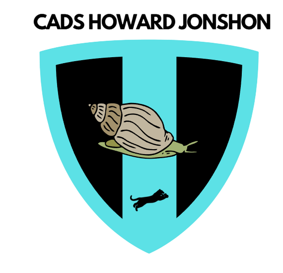
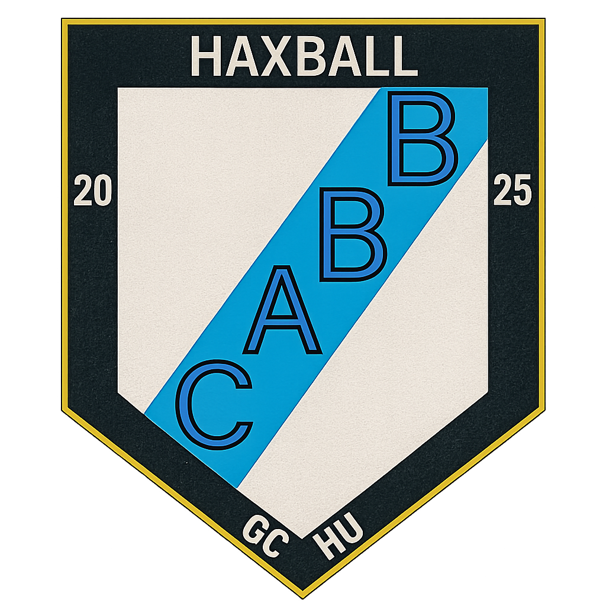

Tabla de Posiciones
| Pos | Equipo | PJ | G | E | P | GF | GC | DG | Pts |
|---|---|---|---|---|---|---|---|---|---|
| 1 |  Akatsuki Futbol Club Akatsuki Futbol Club |
5 | 4 | 1 | 0 | 13 | 4 | +9 | 13 |
| 2 |  Manchester Coyos Manchester Coyos |
5 | 4 | 0 | 1 | 15 | 4 | +11 | 12 |
| 3 |  Claypole Claypole |
5 | 4 | 0 | 1 | 11 | 4 | +7 | 12 |
| 4 | Howdars Jonhson | 5 | 3 | 1 | 1 | 17 | 10 | +7 | 10 |
| 5 |  Chacarita Juniors Chacarita Juniors |
5 | 3 | 1 | 1 | 9 | 3 | +6 | 10 |
| 6 |  Reyes Del Bando Reyes Del Bando |
5 | 2 | 1 | 2 | 13 | 8 | +5 | 7 |
| 7 |  La Gajineta La Gajineta |
5 | 2 | 1 | 2 | 6 | 13 | -7 | 7 |
| 8 | Barra Brava | 5 | 2 | 2 | 1 | 12 | 6 | +6 | 6 |
| 9 |  Formula Argentina Formula Argentina |
5 | 1 | 0 | 4 | 6 | 15 | -9 | 3 |
| 10 |  Asonia F.C. Asonia F.C. |
5 | 0 | 2 | 3 | 1 | 10 | -9 | 2 |
| 11 |  Vasco Da Medellín Vasco Da Medellín |
5 | 0 | 1 | 4 | 1 | 13 | -12 | 1 |
| 12 | Ubers | 5 | 0 | 0 | 5 | 2 | 16 | -14 | 0 |
Campeón y asciende
Asciende directo
Juega Promoción
Descienden